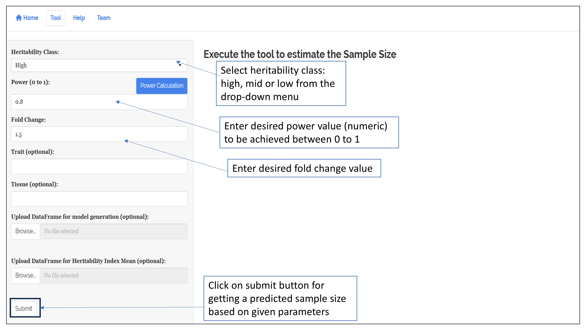
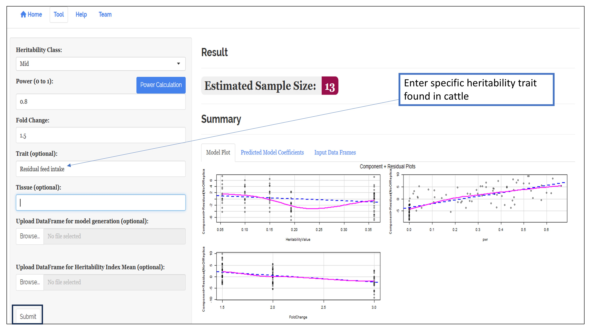
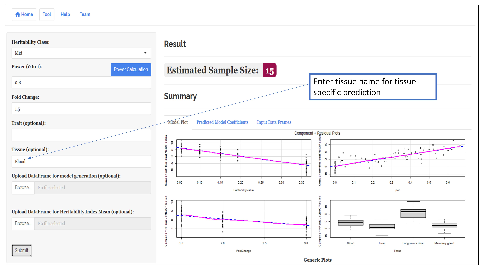
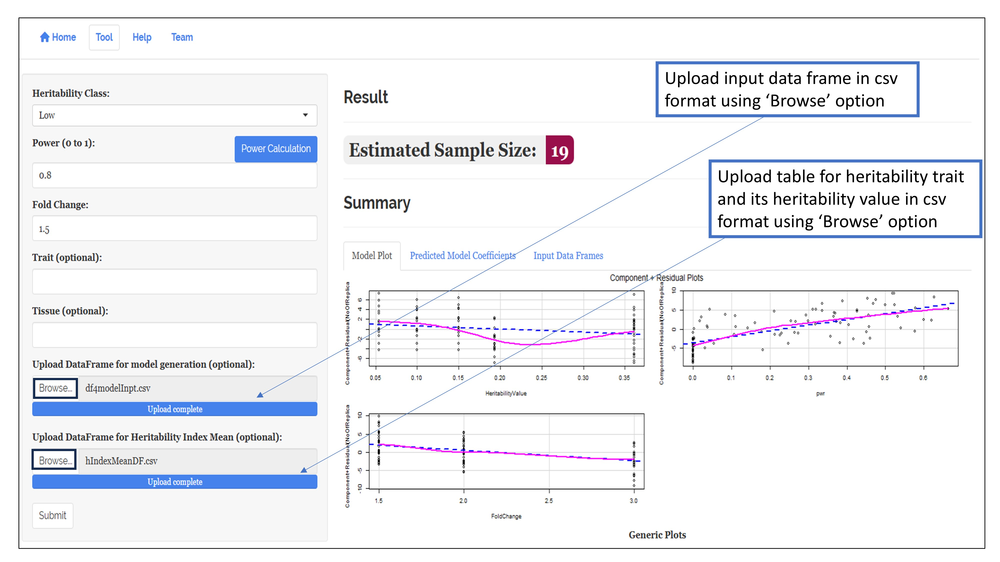
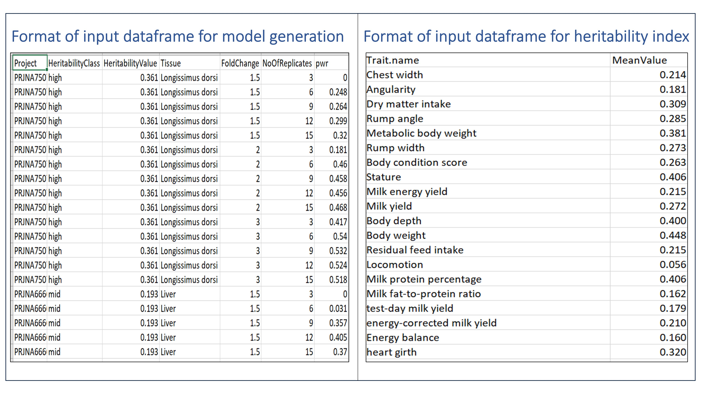
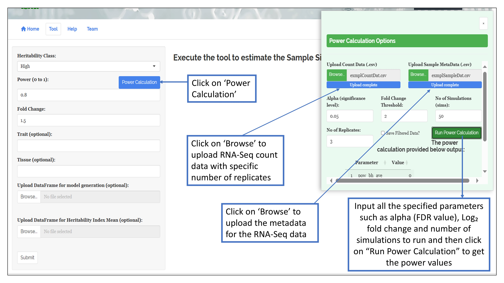
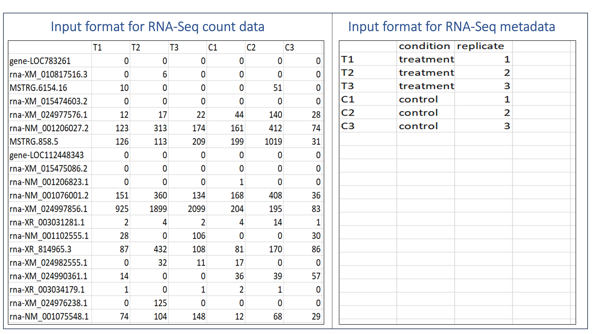

1. Run tool using the default input data and heritability traits specific to cattle

2. Predict sample size based on a specific heritability trait in cattle

3. Predict sample size based on a specific tissue in cattle

4. Run tool using customized input data and heritability data


5. Estimate power of discrimination based on real RNA-Seq count data for a specified number of biological replicates

